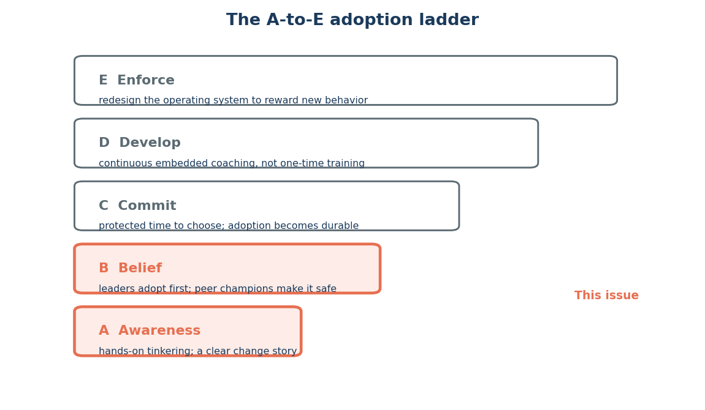
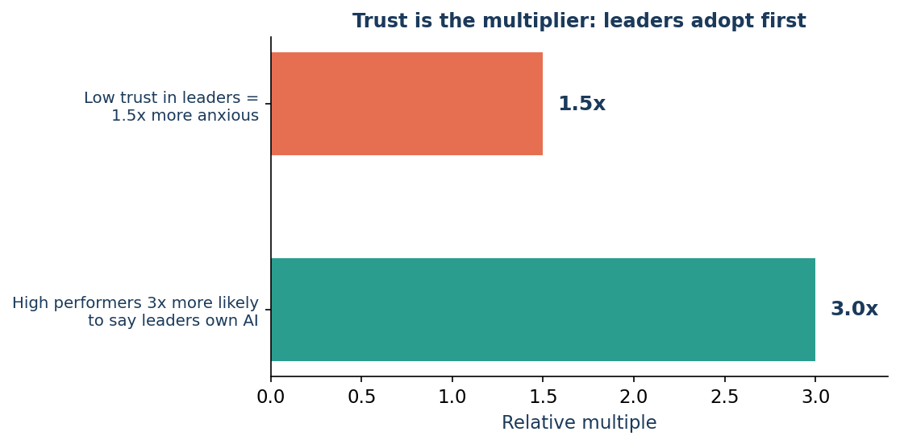

Issue 11 — Awareness & Belief: leaders adopt first, champions make it safe
Edisi 11 — Awareness & Belief: pemimpin duluan mencoba, champion yang bikin aman
For weeks the RCM team heard about agents in the abstract — interest, but a wary distance. Then their director pulled up an agent in a huddle and worked a few real denials in front of everyone, fumbling once, laughing about it, asking what the team would do with a flagged claim. That five-minute demo did more than any memo: it said this is safe to touch, and I'm touching it too.
Selama berminggu-minggu, tim RCM cuma dengar soal agent secara abstrak — ada minat, tapi jaraknya masih hati-hati. Lalu director mereka membuka agent dalam sebuah huddle dan mengerjakan beberapa denial beneran di depan semua orang, sempat salah sekali, tertawa soal itu, bertanya apa yang bakal dilakukan tim dengan klaim yang di-flag. Demo lima menit itu berdampak lebih besar dari memo apa pun: pesannya jelas, ini aman untuk dicoba, dan aku juga sedang mencobanya.
That's the first two rungs of McKinsey's adoption ladder (Figure 11.1). Awareness is hands-on tinkering plus an honest change story — what changes, what you keep owning, and where the review step sits. Belief is leaders adopting first with real examples, and credible peers becoming "AI champions" who make it safe for everyone else through floor walks and office hours. Belief spreads sideways, desk to desk, once trusted people go first.
Itulah dua anak tangga pertama dari tangga adopsi McKinsey (Gambar 11.1). Awareness adalah utak-atik langsung ditambah cerita perubahan yang jujur — apa yang berubah, apa yang tetap jadi tanggung jawabmu, dan di mana langkah review-nya berada. Belief adalah leader yang mencoba duluan dengan contoh nyata, dan rekan yang kredibel jadi "AI champion" yang bikin ini aman buat semua orang lewat floor walk dan office hours. Belief menyebar ke samping, dari meja ke meja, begitu orang-orang yang dipercaya mencoba duluan.

The numbers say why leaders going first is the highest-leverage move (Figure 11.2). Where trust in leadership is low, people are ~1.5x more anxious about AI. And high performers — the ones you most want to keep — are ~3x more likely to say leaders genuinely own AI. A director who tries the tool herself isn't doing a photo op; she's lowering the team's anxiety, which is exactly the thing that otherwise strands adoption (and, per Issue 10's 1:3:5 rule, adoption is where the value converts).
Angka-angkanya menjelaskan kenapa leader yang mencoba duluan itu langkah dengan leverage tertinggi (Gambar 11.2). Di tempat kepercayaan pada leadership rendah, orang jadi ~1.5x lebih cemas soal AI. Dan performer terbaik — orang-orang yang paling ingin kamu pertahankan — ~3x lebih mungkin bilang leader-nya benar-benar memegang AI. Director yang mencoba tool-nya sendiri itu bukan sekadar photo op; dia sedang menurunkan kecemasan timnya, yang justru hal itulah yang kalau dibiarkan bisa bikin adopsi mandek (dan, sesuai aturan 1:3:5 di Edisi 10, adopsi itulah tempat nilai benar-benar terkonversi).

Keep the human-in-the-loop visible as part of the story: showing where the review gate sits is what lets "try it" never mean "trust it blindly." And remember the emotional backdrop from Issue 8 — fear and excitement coexist; a leader modeling imperfect learning is what keeps fear from freezing the team.
Jaga human-in-the-loop tetap terlihat sebagai bagian dari cerita: menunjukkan di mana gerbang review-nya berada itulah yang bikin "coba aja" nggak pernah berarti "percaya aja buta-buta." Dan ingat lagi latar emosional dari Edisi 8 — rasa takut dan semangat berjalan berdampingan; leader yang mencontohkan pembelajaran yang nggak sempurna itulah yang menjaga rasa takut nggak sampai bikin tim membeku.
Three moves to climb the first two rungs:
Tiga langkah untuk naik dua anak tangga pertama:
- Leaders, go first — visibly. Use an agent on your own real task in front of the team, fumbles included. Owning it beats announcing it.
- Name two champions. Pick credible practitioners (not just managers), give them time, and point people to them.
- Open a low-friction door. A weekly office hour or floor walk where anyone can watch an agent work, no question too basic.
- Leader, coba duluan — secara terlihat. Pakai agent buat tugas beneran kamu sendiri di depan tim, termasuk kalau ada salahnya. Memegang langsung lebih ampuh daripada sekadar mengumumkan.
- Tunjuk dua champion. Pilih praktisi yang kredibel (bukan cuma manajer), beri mereka waktu, dan arahkan orang-orang ke mereka.
- Buka pintu yang low-friction. Office hour mingguan atau floor walk di mana siapa saja bisa melihat agent bekerja, nggak ada pertanyaan yang terlalu dasar.
None of this needs a big program — just a few trusted people willing to go first, out loud, imperfectly.
Nggak ada satu pun dari ini yang butuh program besar — cuma beberapa orang yang dipercaya, yang mau mencoba duluan, secara terbuka, meski nggak sempurna.
Sources
Sumber
- A-to-E ladder; Awareness & Belief; low trust = 1.5x anxious; high performers 3x; champions, floor walks, office hours — McKinsey, "How to close the agentic adoption gap" (Aug 7, 2026).
- Tangga A-sampai-E; Awareness & Belief; trust rendah = 1.5x lebih cemas; performer terbaik 3x; champion, floor walk, office hours — McKinsey, "How to close the agentic adoption gap" (7 Agustus 2026).
Other versions of this issue
Versi lain edisi ini
Same idea, different angle. Story-led (A) → · Data / ROI-led (B) →
Ide yang sama, sudut pandang beda. Gaya Cerita (A) → · Data / ROI (B) →